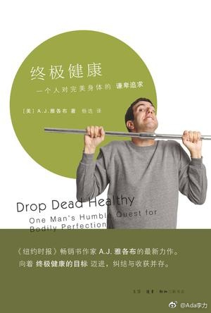

#读书#假期翻完了<终极健康>, 这本书进入视线是因为 1 貌似中年人都开始关注健康, 我已经看到不少人列的年度目标都跟健身健康有关, 那么该看看讲健康类的书了 2 作者把自己当小白鼠, 体验各种健康方法,有些做法还相互矛盾, 这种真人体验蛮吸引我 3 作者是时尚杂志编辑,也是畅销书作者, 这种偏科普的内容会是一种什么写作手法呢?
这本书最大的问题是翻译太差了, 能感觉出作者应该是文笔幽默的类型, 但是被没有幽默感的译者生硬地翻译成中文, 读得别扭也不顺畅.
翻完的最大感受是, 我可以写本<终极年轻>, 把自己当小白鼠尝试各种年轻化项目的经历都写写. 作者写这本书用了两年时间来体验, 购置了各种跟健康相关的器械, 做了N多的检测, 顺便给牙做了美白, 去掉脸上的一颗痣. 我觉得写书是做这些事情的极好借口.
这本书最大的问题是翻译太差了, 能感觉出作者应该是文笔幽默的类型, 但是被没有幽默感的译者生硬地翻译成中文, 读得别扭也不顺畅.
翻完的最大感受是, 我可以写本<终极年轻>, 把自己当小白鼠尝试各种年轻化项目的经历都写写. 作者写这本书用了两年时间来体验, 购置了各种跟健康相关的器械, 做了N多的检测, 顺便给牙做了美白, 去掉脸上的一颗痣. 我觉得写书是做这些事情的极好借口.
- 